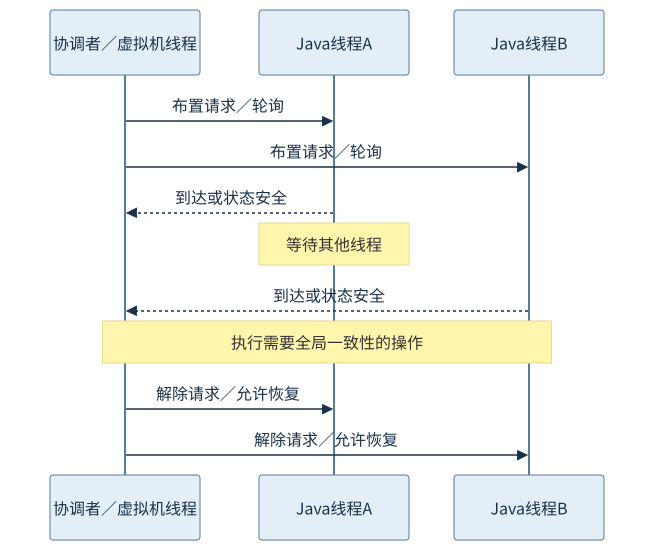
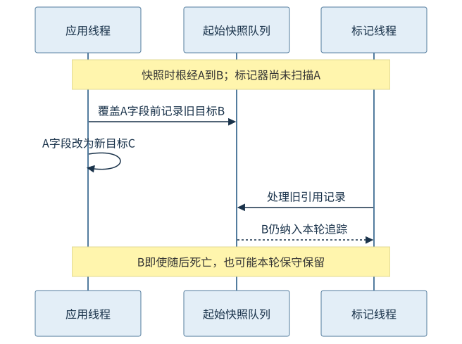

第五篇 · 垃圾收集与运行时协作
第20章 安全点、线程握手与垃圾收集屏障
应用不断改变对象图时，回收器怎样获得完整的信息？把线程协调、引用位置和更新记录连起来，才能理解安全点与屏障。
本章基于 Java 开发工具包（Java Development Kit，JDK）25.0.5.0.2 与 HotSpot；垃圾收集（Garbage Collection，GC）的实现结论定位到固定 OpenJDK 提交，语言与类库语义单独注明。容量单位采用兆二进制字节（mebibyte，MiB）和千二进制字节（kibibyte，KiB）。前置为对象、分配和执行引擎；源码阅读、运行说明与证据索引相互对应。
20.1 全局暂停的过程
20.1.1 一致性服务于具体操作
全局暂停（Stop-The-World，STW）把相关Java线程协调到收集器或运行时可以检查的状态。根扫描、部分阶段切换或对象转移需要各自定义的一致性；并非每一种回收工作都要求整个周期暂停。反过来，类重定义、部分诊断等虚拟机操作也可能使用安全点，所以“出现安全点”不能直接等于“发生GC”。
暂停请求发出时，线程还在不同执行位置；只有被判断为安全或已停靠，协调者才能开始相应全局操作。应将等待所有线程安全与操作本身拆开，否则一个长到达时间会被误诊成回收算法扫描慢。
20.1.2 请求、协调、操作、恢复
SafepointSynchronize::begin建立线程集合边界、布置轮询并等待同步；相关虚拟机操作在已协调状态中执行，结束路径解除轮询和等待屏障。固定更新版的汇总日志分别给出到达、暂停内、离开及总时间。它们是运行时观测边界，不是每个业务线程都在同一纳秒停止／恢复的证明。

20.2 轮询与到达安全点
20.2.1 解释、编译与状态转换
解释器在规定位置检查请求，编译器在调用／返回、循环等适合的路径安排轮询并保留可遍历状态；不是在任意机器指令处都能直接解释寄存器含义。运行时还通过线程从本地状态返回Java执行的转换，阻止线程越过尚未完成的全局协调。
“循环里一定每次迭代都有一次安全点轮询”并不成立：循环形态和编译优化会改变轮询位置。长到达时间应结合线程状态与实际代码，不把用户源码的行号直接映射成固定轮询间隔。
20.2.2 安全状态不是所有系统线程都被冻结
执行本地代码的线程可以被认定处于可安全处理的状态，其Java引用通过句柄等协议管理；它返回托管执行前必须检查请求。安全区域也要有进入／离开协议，不能只标记“这一段不碰堆”就让线程随意恢复。
先到达的线程可能已经等待其他线程；最后到达者决定全局同步完成时刻。因此单线程被影响的等待与总日志不是完全相同的量。操作结束到调度重新获得处理器也仍可能有业务可见间隙。
20.3 线程局部握手
20.3.1 目标线程协作的请求与完成
线程局部握手把闭包请求投递给目标线程，并布置相应轮询；目标可自己处理，在实现允许且线程状态安全时也可由发起者代办。同步请求等待完成，异步请求有自己的生命周期。Handshake::execute、HandshakeState::process_by_self与try_process展示了这条路径。

20.3.2 局部一致性不能推广为全堆快照
只暂停／协作一个线程可以支持该线程栈的某些工作，但其他线程仍可能改写对象图。线程局部握手因此不自动提供全局根同时稳定或全堆对象不移动的保证；是否足够取决于操作、收集器和屏障的组合协议。
本次日志若没有握手条目，只能说明当前日志窗口未记录相应事件。本章从固定实现解释握手，不用普通Java线程之间的锁或倒计时闩锁冒充HotSpot握手机制的实测。
20.4 根扫描与执行引擎
20.4.1 根位置按帧种类解释
解释帧从方法和当前字节码位置计算引用分布；编译帧通过代码对象及OopMap找到寄存器／栈槽，本地入口帧与运行时持有通过句柄遍历。frame::oops_do_internal按帧类型分派，汇编栈地址必须结合寄存器保存规则解释。
第19章图19-1描述根到对象的关系，这里补上根“在哪里”的协议。对象图跟踪不等于扫描所有栈字节；漏掉引用会错误释放对象，误认整数为引用则可能保留或改写错误位置，两种错误都不能靠“多数运行正常”排除。
20.4.2 优化、移动与引用修复
即时编译器（Just-In-Time Compiler，JIT）改变变量位置和对象存在形式后，仍须在支持遍历的位置提供正确记录。去优化恢复信息与回收引用映射各有职责：前者重建逻辑执行状态，后者告诉回收协议哪些实际位置包含引用。
移动对象后，暂停转移可以立即改写可遍历位置；并发移动可以结合转发与访问屏障按协议修复。映射正确、扫描边界安全和修复协议完整必须同时成立，单看对象头的转发字段不能解释全部正确性。
20.5 屏障、卡表与记忆集
20.5.1 记录入口以避免每次全堆扫描
只收集年轻代或一组区域时，外部对象可能指向收集集合。卡表把源地址划成较粗粒度的卡，写入屏障把相应卡标脏；记忆集保留目标区域／区域组所需的外来引用入口。卡记录不是一个个精确对象引用，扫描卡才能发现需要修复的实际槽位。
应用写屏障、线程缓冲、并发细化与暂停内扫描分担维护工作；日志中的脏卡数、扫描卡数与存活对象数并不一一相等。具体收集器可以使用不同结构，不能把Garbage-First（G1）的目标区域组记忆集直接套到Z Garbage Collector（ZGC）。

20.5.2 并发更新如何补齐遗漏
起始快照（Snapshot-At-The-Beginning，SATB）的一种关键做法是在覆盖引用前记录旧目标：若标记器尚未遍历该边，旧目标仍可从记录中被追踪，从而保守保留快照中的存活。它允许本轮留下已经死亡的浮动垃圾，之后的周期再处理。新对象与其他阶段条件还有单独规则，不能只靠一个前置屏障概括所有不变量。
读屏障在加载引用后协助检查或修复访问，写屏障在存储前后协助标记及跨代记录。下图用旧边被删除的情形说明SATB目的，箭头时序是机制示意；不是本程序逐对象的追踪记录。

20.6 两类屏障的边界
20.6.1 回收完整性与线程间顺序
GC屏障维护回收需要的对象图和引用状态；内存屏障约束处理器／编译器可见的访存顺序，用于实现语言内存语义。卡表记录了某个引用写入，不等于这个对象已向其他Java线程安全发布；同样，一个内存排序指令不能独立替代并发回收的标记协议。
第25章将以Java内存模型（Java Memory Model，JMM）解释发布与先行发生关系。本章程序的volatile latest既有Java可见性语义，其引用存储也会按收集器配置执行GC职责，两种责任分别来自语言契约和回收实现。
20.6.2 一段引用写入的多重职责
对同一字段的写入可能先保留旧值、执行必要排序、存入新值，再记录源卡或引用槽；具体编译器可以合并、消除或采用不同快慢路径，但必须保持相应语义。屏障的源级名字与最终指令不要求一一对应。
因此读反汇编时要同时知道字段是否具有同步语义、当前收集器、压缩引用／着色编码和编译层级。只看到一次store或一条栅栏，不能判定整个发布协议或GC协议已完整。
观察与解释边界
CH20-E01使用一个主线程和一个分配线程，24批共12 MiB数组载荷，最大堆64 MiB；两次显式回收请求与GC、safepoint同一启动时间轴关联。原始日志包含G1完整收集及安全点分段时间；应用线程自然结束。日志还记录一次Deoptimize握手：目标12线程，均由请求者执行，总完成时间7750纳秒；这只支持该记录，不代表目标自处理分支也已观测。
本次只关联实际记录的协调与回收；没有制造慢安全点、线程故障或握手压力，没有测业务尾延迟；握手和逐槽修复从固定实现解释。
来源与回顾
- CH20-S01 安全点实现：SafepointSynchronize::begin / end；SafepointTracing::end；协调边界和实际日志字段。
- CH20-S02 握手实现：Handshake::execute；HandshakeState::process_by_self / try_process；请求、自己处理、安全代办与完成。
- CH20-S03 根扫描实现：frame::oops_do_internal；InterpreterOopMap；OopMap；按帧类型解释引用位置。
- CH20-S04 屏障实现：write_ref_field_pre / post；enqueue；前置旧引用与后置卡记录。
- CH20-S05 Java平台标准版（Java Platform, Standard Edition，Java SE）25语言语义：语言规范17.4.5；volatile与线程协作语义；GC屏障不替代同步。
源码固定提交：1775ea114f649f0314e4e43eb6c802ff16dfab7c。实现定位和完整命令见证据索引及运行记录；插图表达机制，没有填入推测的时间或地址。
回顾：先确定哪些引用或状态必须保留，再看工作在哪里执行、消耗哪些资源。思考：日志总时间很长而暂停内工作很短时，应先查哪一段？为什么单目标握手不提供全堆快照？为什么卡表不能代替安全发布？